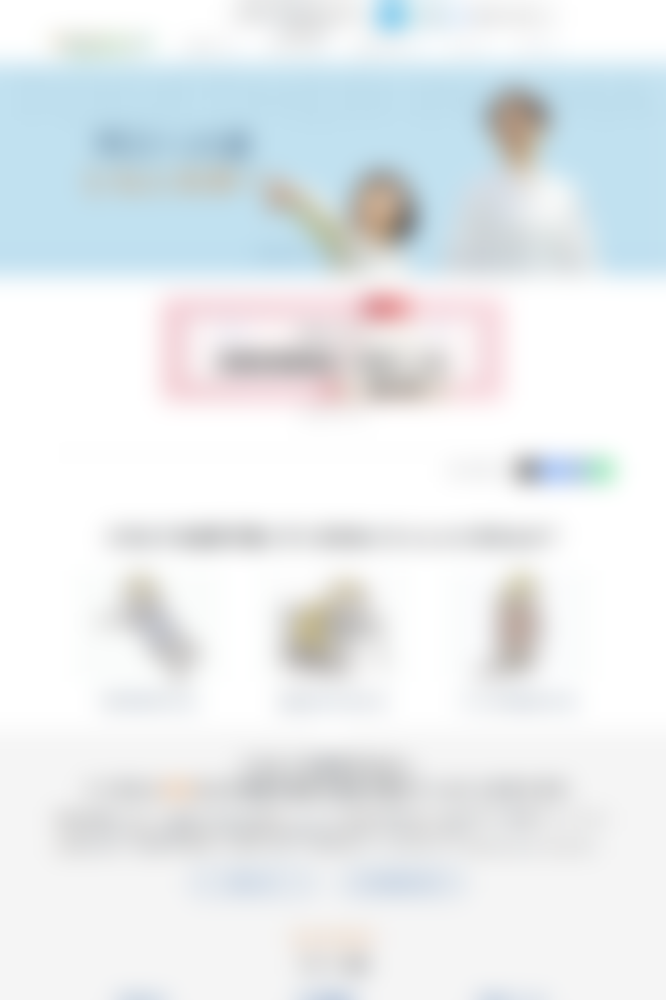

AEM — Corporate & Product Pages (Member → Lead)
Created and updated corporate, product, disease, and patient support pages using Adobe Experience Manager (AEM). Initially joined as a team member and later took a lead role, supporting QA, Localization QA for Japanese content.